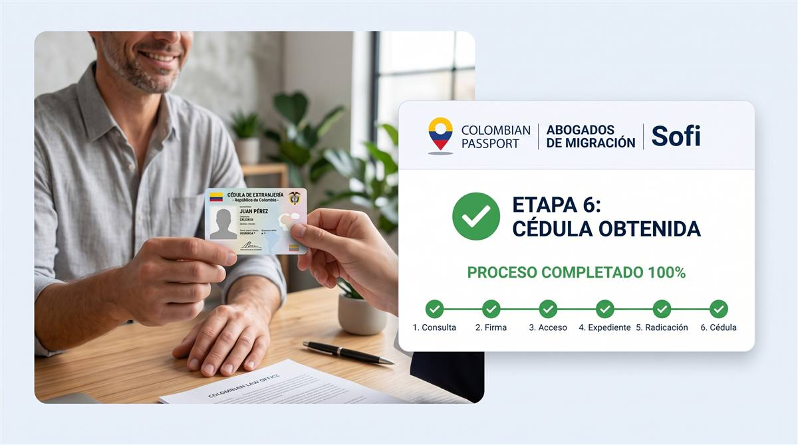

Primera vez que abrimos el programa completo. $4.500 USD con las tasas, la cédula y el seguro incluidos, no solo los honorarios. El precio y los compromisos quedan fijos para quien entre en esta cohorte. No es un descuento: es acceso. Después del 15 de enero, la siguiente cohorte tendrá nuevas condiciones.
Lo que cambia cuando delegas de verdad
El trámite no es difícil por la ley. Es difícil por los proveedores, las plataformas del Estado, los pagos y el miedo a equivocarse. Esto es lo que quitamos de tu lado.
Tres cosas que no vuelves a hacer
No es “te ayudamos con el papeleo”. Es que el papeleo, las plataformas y los pagos dejan de existir de tu lado.
No llenas un solo formulario
No redactas cartas, no corres a notarías, no persigues traductores. Preparamos, apostillamos, traducimos y armamos el expediente completo. Tú firmas el poder.
No entras a ningún portal del Estado
No creas cuentas, no peleas con SITAC, con Cancillería ni con Migración Colombia, no persigues contraseñas ni el botón que no funciona. Radicamos nosotros, con tu poder.
No abres la billetera
Estudio, expedición, cédula y seguro médico van dentro del precio. El día de la biometría la pagamos nosotros, en la ventanilla, contigo. Ni un cobro sorpresa.
Por qué importa: cada una de esas tres cosas es una forma distinta de perder semanas. Un formulario mal llenado, una cuenta bloqueada o un pago hecho en la ventanilla equivocada retrasan el expediente igual que un error legal. Quitarlas de tu lado es el programa.
Cuatro compromisos, por escrito
No prometemos tu visa: nadie honesto puede. Nos hacemos cargo de todo lo demás —el tiempo, el riesgo, la presencia y el acompañamiento— para que tu única tarea sea firmar y aparecer.
72 horas para radicar
Desde que tu expediente está completo, radicamos en 72 horas. Si no lo hacemos, te devolvemos la consulta de $80. Sin excusas de plataforma.
Inadmisión cubierta
Si Cancillería inadmite, re-radicamos sin honorarios las veces necesarias — y esta vez las tasas de la nueva radicación las pagamos nosotros. No cubre el rechazo definitivo.
El día de la biometría no vas solo
Vamos contigo a Migración Colombia, pagamos la cédula en la ventanilla y estamos a tu lado en la fila. Si algo se complica, reclamamos tus derechos ahí mismo, en tu idioma. Migración permite acompañante: lo usamos.
Hasta el primer mes resuelto
El trámite no termina con la visa: cita de biometría, cédula, EPS, cuenta bancaria y lo básico para aterrizar. Incluido, no como extra.
Y si el error es nuestro: cuando una inadmisión se debe a un error de preparación imputable a la firma y no puede corregirse, devolvemos el 50% de los honorarios. Preferimos responder por el trabajo antes que discutirlo.
Para quién es — y para quién no
Aceptamos pocos casos, y no todos. Decir que no a tiempo también es parte del servicio.
Es para ti si…
- Tienes una vía legal clara (la confirmamos en la consulta).
- Puedes cubrir el programa y prefieres no volver a entrar a una plataforma del Estado ni a una ventanilla.
- Quieres una abogada senior de principio a fin, no un call center.
No es para ti si…
- Buscas que alguien te prometa la aprobación. Nadie honesto puede hacerlo.
- Tienes un rechazo definitivo: hay que esperar 6 meses y evaluar otro trámite.
- No puedes cubrir el programa.
La comparación que importa
No es “abogado vs. no abogado”. Es “quién responde cuando algo sale mal”.
| Por tu cuenta | Cédula en Mano | |
|---|---|---|
| Quién arma el expediente | Tú, con guías y ChatGPT | Abogada senior + IA de validación |
| Quién consigue apostillas y traducciones | Tú, proveedor por proveedor | Nosotros coordinamos y pagamos cada uno |
| Quién entra a SITAC y responde requerimientos | Tú, sin saber qué espera Cancillería | Tu abogada, con tu poder y táctica legal |
| Quién paga estudio y expedición | Tú, tasa por tasa | Incluidas en el precio |
| Si inadmiten | Vuelves a pagar estudio y empiezas | Re-radicamos sin honorarios y cubrimos las tasas |
| Quién paga la cédula | Tú, en la ventanilla | Nosotros, contigo, en la ventanilla |
| Quién te acompaña en la biometría | Nadie: vas por tu cuenta | Vamos contigo y hablamos por ti si hace falta |
| Tiempo típico | 14–17 semanas | 7 semanas recomendadas · radicación en 72 h |
| Quién responde por el error | Nadie | La firma: 50% de honorarios si es nuestro |
Los tiempos dependen de Cancillería y de la visa. La radicación en 72 h aplica desde que el expediente está completo.
Tu caso es demasiado importante para el ensayo y error
Si tu futuro, tu familia o tus inversiones dependen de una visa colombiana, un solo error puede costarte meses de retraso, dinero o un rechazo directo. No necesitas un abogado para pedir tu visa, pero creemos que es una inversión inteligente.

"Mi consejo: no intenten este proceso sin asistencia profesional. Contraten a este eficiente equipo."
— Steven Russo, reseña real de Google verificada
Conoce a tu abogada: Camila Ocampo

Fundadora y Socia Directora
Abogada de la Universidad de los Andes (2007). Más de 15 años de práctica, estudios avanzados en Derecho y Migración (Uniandes, 2025). Fundó Colombian Passport en 2024 con una regla: tu caso nunca es un expediente más — tratas directamente con ella, de inicio a fin.
Práctica 100% senior. Sin juniors en casos.
Solo aceptamos casos con vía legal clara — y lo apostamos todo a tu visa. La misma abogada de inicio a fin.
Clientes que delegaron el papeleo

"¿Qué puedo decir de esta empresa y su equipo de abogados? En resumen, son excelentes, cultos, sinceros, actualizados con la ley a medida que cambia, y un equipo minucioso de abogados profesionales y honestos. Mi experiencia con Camila y su equipo ha sido nada menos que ejemplar; marcan el estándar que todos los abogados y empresas deberían tener. Su enfoque es muy profesional. Tuvimos una videollamada en la que revisamos mi situación actual, los requisitos, e hicimos una revisión preliminar del proceso y todos los resultados posibles. Me animaron a preguntar sobre todos los aspectos del proceso y los resultados posibles. Me interesaba mi caso y una visa de cónyuge, y me entregaron documentos escritos para ambos procesos junto con la documentación que yo debía aportar. Tras entregar los documentos, autenticados o apostillados, el proceso avanzó sin tropiezos con actualizaciones periódicas para mantenerme informado. During my process we ran into issues Durante mi proceso surgieron temas que yo desconocía. Fueron muy comprensivos, me explicaron lo necesario, los resultados posibles según las nuevas circunstancias, revisaron toda la documentación y me dieron la mejor opción para avanzar. En resumen, mi solicitud fue aprobada. Programaron mi cita biométrica, me dieron direcciones, horarios, los documentos que debía llevar, completaron algunos documentos necesarios (en español) y me guiaron en todo el procedimiento de la entrevista. Los honorarios fueron razonables (menos de lo que me cotizaron otras firmas), el proceso de apostilla fue excelente, terminado a tiempo y muy rentable (otras empresas me cobraban mucho más y con plazos mucho más largos). Me enviaron empresas que fueron a mi apartamento para las huellas y también citas médicas para los exámenes físicos. Importante para mí era una empresa que se comunicara en inglés (eran bilingües) y pudiera comunicarse con fluidez en inglés; fueron los mejores. Coordinaron todas las traducciones de documentos y verificaron que estuvieran correctas. Más importante aún: fueron receptivos y atentos a mis necesidades, y nunca me prometieron de más ni me dieron falsas esperanzas. Fueron totalmente honestos durante todo el proceso. Esta es una organización de servicio integral y la recomiendo ampliamente a TODAS las personas que quieran obtener una M-Visa para Colombia. Esta gente sabe lo que hace, conoce la ley y tiene varias opciones disponibles para su circunstancia específica dentro o fuera de Colombia."

"Tuve una experiencia fantástica trabajando con Camila. Me la recomendaron dos amigos extranjeros en Manizales que no se conocían entre sí, así que pensé que era una buena señal. Ojalá hubiera trabajado con ella desde el principio. Intenté tramitar mi visa de nómada digital por mi cuenta para ahorrar dinero, pero al enviar la solicitud, me la devolvieron inadmitida, así que acudí a Camila en busca de ayuda. Enseguida supo cómo mejorar mi solicitud y aumentar mis posibilidades de aprobación. También me dijo que había realizado muchos trámites innecesarios y pagado por servicios notariales, apostillas y traducciones innecesarias para ciertos documentos. Me ayudó a corregir la solicitud y a volver a presentarla, y me la aprobaron en una semana. Camila hizo que el proceso fuera mucho más fácil y menos estresante, ¡la recomiendo ampliamente!"
Más de 80 reseñas reales
Firma cinco estrellas en Google y Top 3 en Lawzana.
Pregunta tu caso por WhatsApp →Cómo funciona: de la llamada a la cédula, sin caos
Un proceso diseñado para que nunca persigas un papel ni te preguntes qué sigue. Tecnología + abogada senior, de inicio a fin.

1Consulta estratégica ($80)
Camila diagnostica tu caso en llamada y confirma si hay vía legal clara. El mismo día recibes el acta y tu propuesta por escrito, con el precio fijo.

2Firma y primer 50%
Firma digital, factura legal automática y pago con tarjeta. Sin anticipos en efectivo ni vueltas. La consulta de $80 queda abonada. Desde aquí, las tasas del trámite ya no pasan por tus manos.

3Nosotros reunimos el expediente
Coordinamos antecedentes, huellas, apostillas, traducciones, certificado médico y póliza. Tú no entras a ninguna plataforma: en Sofi ves qué falta y qué ya está listo, desde el teléfono.

4La IA revisa, la abogada decide
La IA extrae datos, genera plantillas y detecta errores de tipeo. Tu abogada pone el criterio legal final antes de radicar.

5Radicación + segundo 50%
Radicamos en SITAC dentro de 72 horas con el expediente completo y las tasas ya pagadas por nosotros. Trackeamos a diario, respondemos requerimientos y te avisamos cada vencimiento.

6Cédula y primer mes resuelto
Registro de visa, cita de biometría, cédula, EPS, cuenta bancaria y SIM. Vamos contigo a la biometría, pagamos la cédula ahí y estamos en la fila a tu lado. La misma abogada que te recibió te acompaña hasta el final.
Tu tranquilidad, por sistema: Sofi 24/7 · IA que valida antes de radicar · recordatorios de vencimientos · WhatsApp directo con tu abogada · factura y pagos online · la misma senior de inicio a fin.
Un precio fijo. Nada por fuera. Un cupo real.
$4.500 USD con tasas, cédula y seguro incluidos · 50% a la firma y 50% a la radicación · 15 casos en la cohorte de enero de 2027.
Cédula en Mano
Tu visa, tu cédula y tu primer mes — sin papeleo, sin plataformas y sin pagar nada.
Para quién: quien tiene una vía legal clara y no quiere volver a entrar a una plataforma del Estado ni a una ventanilla.
$4.500 USD
USD · todo incluido · 50% a la firma / 50% a la radicación
- Todo el servicio de visa: documentos, cartas, SITAC y seguimiento
- Tasas del Estado incluidas: estudio de $56 y expedición de la visa
- Cédula de extranjería incluida: la pagamos nosotros en la ventanilla, contigo
- Seguro médico incluido
- Certificado médico incluido si estás en Colombia
- Coordinación total de terceros: antecedentes, huellas, apostillas y traducciones
- Radicación en 72 horas con expediente completo
- Respuesta a todos los requerimientos de Cancillería
- Re-radicación por inadmisión sin honorarios + tasas de la nueva radicación cubiertas
- Registro de visa y todas las citas de biometría y cédula, con acompañamiento presencial
- Primer mes resuelto: EPS, cuenta bancaria y SIM
- Revisión de residencia fiscal y regla de 183 días
- Abogada senior de principio a fin
- Beneficiario: +$990 por persona, con todo incluido para esa persona
- Renovación con nosotros: $3.000 en vez de $4.500 (-33%)
La consulta de $80 se abona al contratar.
La segunda vez cuesta menos
Cuando te toque renovar, vuelves al mismo programa por $3.000 USD en vez de $4.500: mismo alcance, misma abogada, mismo acompañamiento en la biometría. Lo caro es la primera vez; después, la firma ya te conoce.
Nuestra promesa: si Cancillería inadmite tu solicitud, la volvemos a radicar sin cobrarte honorarios, las veces necesarias hasta la aprobación — y en esta cohorte cubrimos las tasas de cada nueva radicación. No cubre el rechazo definitivo.
Cómo se paga: reservas la consulta de $80 → Camila confirma tu caso y el precio por escrito → contratas con la consulta abonada: 50% a la firma y 50% a la radicación → tu abogada ejecuta y te mantiene al tanto de cada paso.
Lo único que no podemos hacer por ti, dicho sin letra pequeña
Si estás fuera de Colombia, el certificado médico se hace con un médico autorizado en tu país: es un acto personal que no se puede delegar. Te decimos cuál, revisamos el documento y lo validamos antes de radicar. Si estás en Colombia, lo conseguimos nosotros y va incluido.
Un rechazo definitivo no se puede prometer ni cubrir: nadie honesto puede asegurar una aprobación. Si es inadmisión, re-radicamos sin honorarios y con las tasas cubiertas.
Lo que ya está dentro de los $4.500
- Estudio de la visa: $56 USD por cada radicación, incluidas las re-radicaciones por inadmisión.
- Expedición de la visa: V $183 / M $279 / R $408 USD, solo si la aprueban.
- Cédula de extranjería: $294.000 COP, la pagamos nosotros en la ventanilla, contigo.
- Seguro médico y certificado médico si estás en Colombia.
- Apostillas, traducciones y antecedentes: los coordinamos y los pagamos nosotros.
- Citas, gestiones y trámites ante el Estado: todos, sin cobro adicional.
Respuestas directas, antes de preguntar
¿Qué significa exactamente “no toco un papel”?
Que no redactas cartas, no llenas formularios y no persigues notarías, traductores ni proveedores. Nosotros preparamos, apostillamos, traducimos y armamos el expediente completo. Tú firmas el poder y lo que solo tú puedes firmar —declaraciones y tu examen médico— y apareces en la biometría. No significa que no existan documentos: significa que no pasan por tus manos.
¿Tengo que entrar a alguna plataforma del Estado?
No. No creas cuentas, no entras a SITAC, a Cancillería ni a Migración Colombia, no persigues contraseñas ni códigos de verificación. Radicamos nosotros con el poder que firmas, respondemos los requerimientos y te enviamos cada documento aprobado. La única diligencia presencial es la toma de datos biométricos para la cédula, y ahí te acompañamos.
¿Qué tengo que pagar yo?
Nada del trámite. El estudio de $56, la expedición de la visa, la cédula de extranjería y el seguro médico van dentro de los $4.500. La cédula la pagamos nosotros en la ventanilla, el día de la biometría, contigo. Si estás fuera de Colombia, el certificado médico lo sacas con un médico autorizado en tu país: te decimos cuál y validamos el documento.
¿Quién paga la cédula y quién me acompaña?
Nosotros. La cédula de extranjería ($294.000 COP) la pagamos en la ventanilla de Migración Colombia el día de la toma de datos biométricos, y vamos contigo: te esperamos, hacemos la fila a tu lado y, si algo se complica, hablamos por ti y reclamamos tus derechos. Migración permite acompañante, así que no tienes que enfrentar esa mañana solo ni en un idioma que no dominas.
¿Qué incluye y qué no incluye?
Incluye el servicio completo de visa, la coordinación y el pago de terceros (antecedentes, huellas, apostillas, traducciones), las tasas del Estado (estudio y expedición), la cédula de extranjería, el seguro médico, el certificado médico si estás en Colombia, la radicación en 72 horas, la respuesta a requerimientos, la re-radicación por inadmisión sin honorarios y con las tasas cubiertas, el registro de visa, las citas de biometría y cédula con acompañamiento presencial, y el primer mes resuelto (EPS, banco y SIM). No incluye el certificado médico si estás fuera de Colombia ni el rechazo definitivo.
¿Cuánto cuesta y cómo se paga?
$4.500 USD todo incluido, en dos pagos: 50% a la firma de la propuesta y 50% a la radicación. Con tarjeta y factura legal. La consulta de $80 se abona al contratar. Cada beneficiario suma $990, con todo incluido para esa persona: sus tasas, su cédula, su seguro y su certificado médico si está en Colombia.
¿Y cuando tenga que renovar mi visa?
Vuelves al mismo programa por $3.000 USD en vez de $4.500: un 33% menos, con el mismo alcance, la misma abogada y el mismo acompañamiento en la biometría. El descuento aplica a la renovación del mismo plan.
¿Y si inadmiten mi solicitud?
La volvemos a radicar sin cobrarte honorarios, las veces necesarias hasta la aprobación, y en esta cohorte cubrimos las tasas de cada nueva radicación. No cubre el rechazo definitivo: si Cancillería rechaza de forma definitiva, hay 6 meses de espera y hay que evaluar otro trámite.
¿Y si mi caso no es viable?
Te lo decimos en la consulta y no te vendemos el programa. Si no hay vía legal clara, te devolvemos los $80 y te explicamos por qué. Preferimos un no honesto hoy a un expediente condenado en tres meses.
¿Por qué solo 15 cupos?
Porque cada caso lo diagnostica Camila y lo ejecuta una abogada senior. Quince es lo que podemos hacer en una cohorte sin bajar la calidad ni convertirte en un expediente más. Cuando se llenan, se cierra.
¿Aplica a cualquier visa? ¿Puedo hacerlo desde mi país?
Aplica a cualquier visa colombiana con vía legal clara: pensionado, nómada digital, cónyuge, rentista, inversionista, trabajador, residente y las demás. Se puede hacer desde Colombia o desde tu país de residencia: el poder se firma a distancia, nosotros radicamos y la biometría se hace cuando llegas. No aplica a rechazos definitivos ni a casos sin ruta legal.
¿Qué pasa si no alcanzo la cohorte de enero?
Entras a la lista de espera de la siguiente cohorte y te avisamos antes de abrirla. No pierdes la consulta: si ya la hiciste, el diagnóstico y el acta siguen vigentes.
Reserva tu lugar en Cédula en Mano
Déjanos tus datos para revisar tu caso y confirmar tu cupo en la cohorte de enero de 2027.
Consulta Migratoria Estratégica
Con Camila Ocampo & Associates
Resolvemos tu caso y confirmamos si Cédula en Mano es tu vía: perfil, tiempos, costos y estrategia.
- Videollamada privada de 1 hora para diagnóstico legal.
- Acta y propuesta por escrito el mismo día, con el precio fijo confirmado.
- Plantillas incluidas: te damos el modelo de carta de solicitud y te guiamos para diligenciarla.
Consulta: $80 USD · 100% abonables a tu caso
Pago seguro · Confirmación inmediata · Horas en tu huso horario